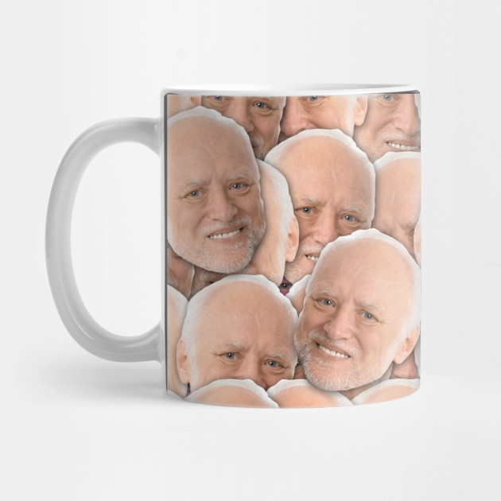
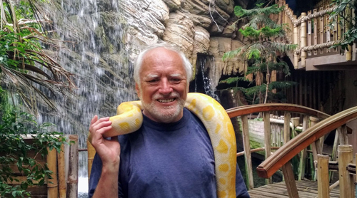

Modelling

I have worked many years as a model. I pose for any kind of photo. This has been my main job for many years. These pictures become stock photographs to be used all over the web. I am known for my smile in the modelling business.
Personized Coffee Mugs

I also have a passion for making coffee mugs. I let people choose their own pictures to print on their mugs. I have been a coowner of this business for 6 years now. The mugs are high quality. The company started in 2015.
Zimbabwe Zoo

In 1997 i opened my own Zoo. The Zoo has a habitat for snakes, koalas and mules. It is located in the city of Harare, Zimbabwe. The Zoo currently has 9 employees and hosts 400 guests on a weekly basis. I stepped down as manager in 2015 to focus on my coffee mug business.